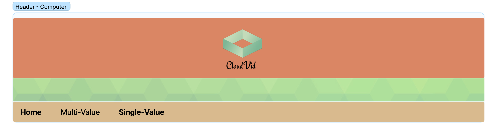
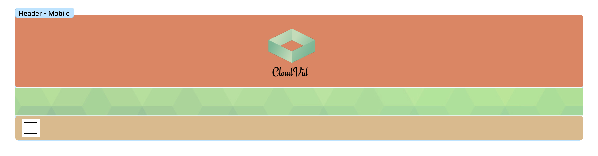

Page Layouts
The page layout for Cloud Vid is simple, we focus mainly in the dashboards! Information is priceless (or sort of...), so we start by having a simple header with a nice overlay image texture, and then our navbar:
These show how the the header and navbar should look, for both mobile and computer view:
Computer
Mobile
Multi-Value Charts Page
Overview
The Multi-Value Charts Page is designed for users seeking a comprehensive overview of key video metrics
in a visually appealing format. It's the ideal choice for those who require a quick snapshot of video
performance and engagement data. This page layout offers a well-organized and informative design, making
it easy to track multiple video-related KPIs.
Use Case
Imagine you are a content creator or a marketing professional responsible for monitoring the performance of
your videos on a platform like Cloud Vid. With the Multi-Value Charts Page, you can efficiently track key
metrics and make data-driven decisions to improve your video content strategy. This page simplifies the
process of understanding how different metrics are interconnected and helps you identify trends and
opportunities.
Single-Value Charts Page
Overview
The Single-Value Charts Page is designed to cater to users who require in-depth information about video
performance, including detailed insights into audience demographics, watch time, and engagement metrics.
It serves as the go-to layout for those who need a comprehensive analysis of video data.
Use Case
Consider you are a data analyst responsible for monitoring the performance of video content on Cloud Vid. The
Single-Value Charts Page becomes your primary resource for drilling down into data, extracting actionable
insights, and creating comprehensive reports for stakeholders. With this page, you can quickly assess audience
demographics, identify trends in engagement, and determine which videos are driving the most watch time.